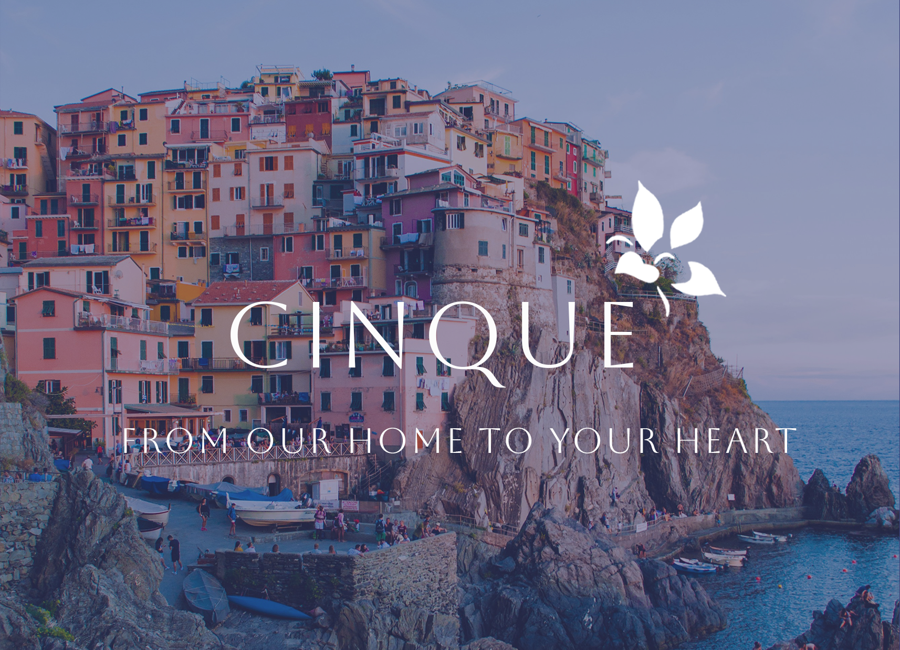
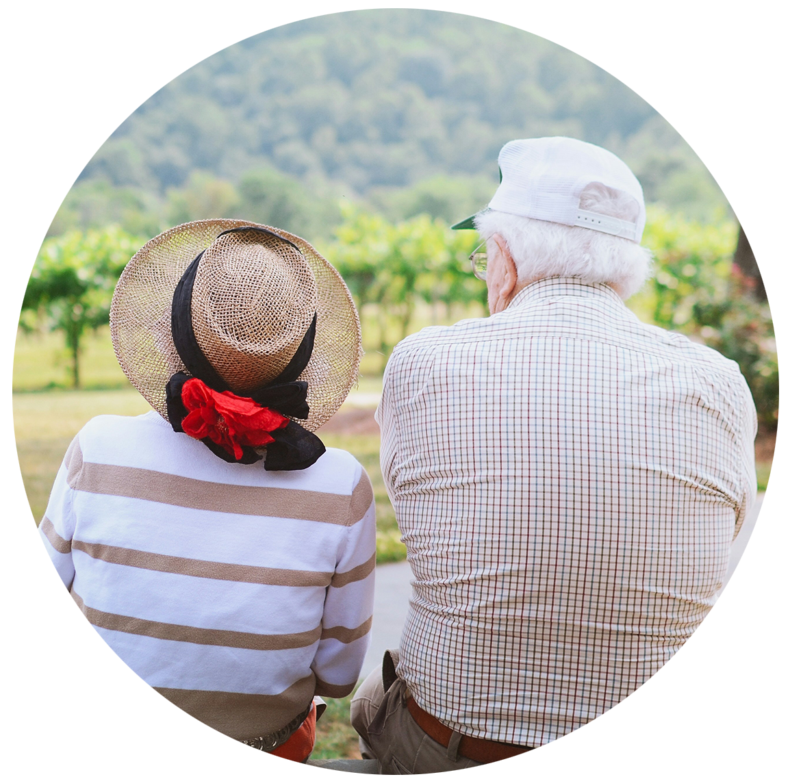

About
Cinque Restaurant was founded by Catalina and Francisco Rossi, a couple who met in Cinque Terre, Italy. Together, they got married and had a family, where they made home cooked meals for their children everyday. These meals became staples in the family and they decided to eventually share their food with the rest of the world. They moved to the United States in 1998 and their children helped them open their restaurant twelve years later in 2010. Now, even their grandchildren take part in running the restaurant.
Learn more about Cinque Terre, Italy.